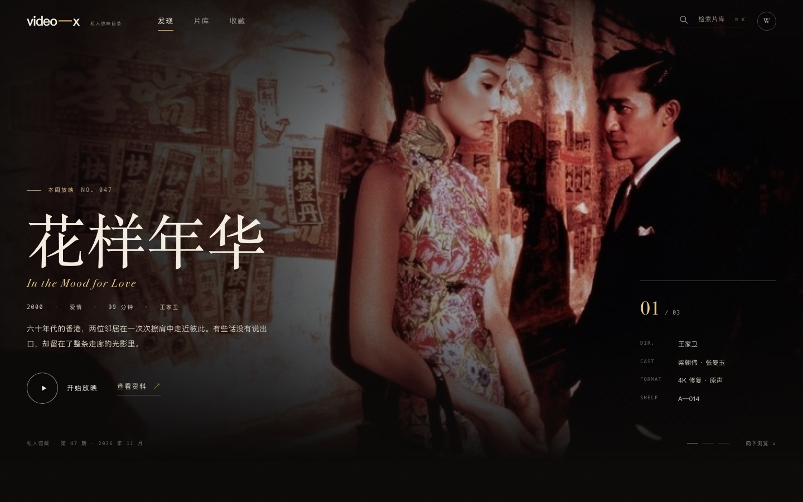

画面优先
海报与剧照不装进卡片，不加圆角，不用统一比例裁切遮住原图。让图片自己形成节奏，文字只做注脚。
Design proposal · 2026.11 · 第 47 期
不是把现有界面换个颜色，而是重写观看的节奏：让画面先说话，让资料退后半步。 观看端是一间暗房，管理端是一张日光下的编目桌，手机则是口袋里的一册放映单。

01 / DISCOVER深色影院主题，宋体标题，黄铜色单一强调。首屏只留一部电影和一次开始。
The three rooms · 三端
观看端负责沉浸，管理端负责判断，手机负责快速回到正在发生的事。它们共享宋体标题、等宽标签、细线与编号，但各自使用适合场景的底色。
The idea · 设计取向
现有实现的问题不是“不好用”，而是每个元素都在争夺注意力：胶囊筛选、圆角卡片、均匀网格、同一套深灰。新版本先做减法，再建立层级。
海报与剧照不装进卡片，不加圆角，不用统一比例裁切遮住原图。让图片自己形成节奏，文字只做注脚。
宋体承担片名与章节，等宽字承担日期、编号、规格。大标题与 8px 标签之间故意留出跨度，界面才有呼吸。
观看端用近黑与黄铜，管理端用暖纸与牛血红。不是两套品牌，而是同一套排印在白天与夜晚的不同曝光。
喜欢、评分、续播、核对都贴着正在看的东西。筛选是抽屉而不是新页面；确认与发布仍然是两个明确动作。
Visual system · 视觉系统
颜色只承担状态与强调，不承担装饰。字号以 4px 为步进；管理端常用控件 32–36px，移动端触控目标至少 44–48dp。
放映目录
The Programme
Songti SC · 标题 / 片名
Bodoni 72 / Didot · 拉丁副题
SF Mono · 日期、编号、字段
4 / 8 / 12 / 16 / 24 / 32 / 48 / 64 / 96 / 128
观看端 12 栏，海报 5／6 列；管理端 248 侧栏 + 固定内容线；移动端 20px 边距 + 2 列。
进入 700–1000ms 缓出；悬停 180ms；播放器与抽屉 480ms。只用位移、透明度与 1.03 倍图片缩放。
Code to screen · 代码映射
每一屏都能在仓库里找到对应的路由、数据字段与操作状态。原型不新增业务能力，只改变信息的顺序与视觉权重。
apps/web/src/app/Experience.tsxfeatures/film/FilmDetail.tsx观看端 · 详情全幅剧照 + 浮动海报；简介、剧照、演员、系列按阅读顺序下沉；个人动作贴边。features/playback/Playback.tsxapps/admin/src/app/AdminShell.tsx管理端 · 外壳深色粉紫改成日光纸与牛血红；侧栏保留 184→248px 的信息容量，编号分组。features/intake/Intake.tsxfeatures/catalog/CatalogPage.tsx管理端 · 资料库列表作为默认密度，封面缩略图、文件状态与版本仍在同一行；筛选靠边。features/film-editor/FilmWorkspace.tsx管理端 · 编辑分区导航、表单、封面预览与发布检查三栏；保存栏吸底，状态不丢。features/operations/SystemStatus.tsx管理端 · 系统卷容量做成编目卡片；Worker、数据库、工具与恢复状态分成两组信息。apps/android/.../LibraryApp.ktScope · 原型边界
没有启动数据库、没有写入真实媒体盘。所有页面都是静态 HTML/CSS/JS，使用现有设计目录中的影片封面与公开资料。
39 部影片、100 位影人、7 个系列来自现有 cinemaCatalog 演示资料。喜欢、评分、续播、草稿、卷容量为界面演示值，不写入数据库。
观看端：发现、片库、收藏、详情、播放。管理端：录入、资料库、编辑、系统状态。移动端：发现、片库、详情、筛选、播放。
真实视频解码、上传、来源抓取、发布事务、Android 原生返回栈与权限。标签、片商、任务、归档等页保留信息架构，未逐屏绘制。
先把 tokens 与字体接入 packages/design-tokens，再做共享按钮/字段；随后观看端外壳、管理端外壳、Android 主题，最后逐页替换。
Open the prototypes